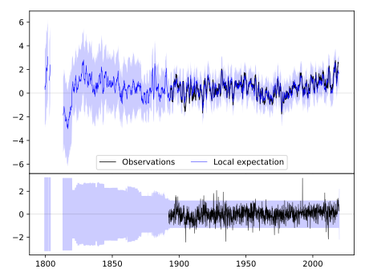
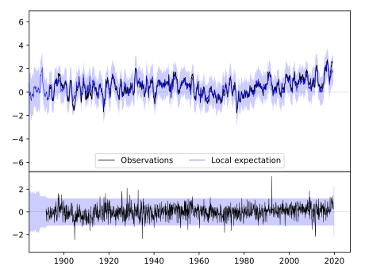
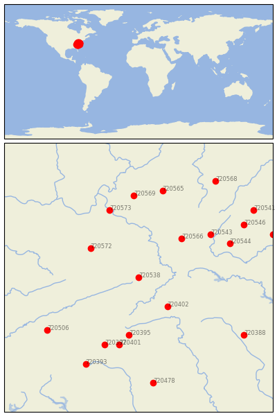

BURKES GARDEN [USA]


| Neighbour | Name | Country | Distance | Lon/Lat | Years |
|---|
| 720538 | BURKES GARDEN | USA | 0 | -81.3, 37.1 | 1892-2019 |
| 720402 | MT AIRY 2 W | USA | 85 | -80.7, 36.5 | 1889-2019 |
| 720572 | WILLIAMSON | USA | 110 | -82.3, 37.7 | 1892-2019 |
| 720566 | LEWISBURG 3 N | USA | 119 | -80.4, 37.9 | 1893-2019 |
| 720395 | LENOIR | USA | 134 | -81.5, 35.9 | 1871-2019 |
| 720401 | MORGANTON | USA | 159 | -81.7, 35.7 | 1879-2019 |
| 720573 | WINFIELD LOCKS | USA | 164 | -81.9, 38.5 | 1893-2019 |
| 720543 | HOT SPRINGS | USA | 165 | -79.8, 38.0 | 1892-2019 |
| 720397 | MARION 2 NW | USA | 167 | -82.0, 35.7 | 1879-2019 |
| 720544 | LEXINGTON | USA | 184 | -79.4, 37.8 | 1861-2019 |
| 720569 | SPENCER | USA | 189 | -81.4, 38.8 | 1892-2019 |
| 720565 | GLENVILLE | USA | 204 | -80.8, 38.9 | 1893-2019 |
| 720506 | NEWPORT 1 NW | USA | 209 | -83.2, 36.0 | 1879-2019 |
| 720393 | HENDERSONVILLE 1 NE | USA | 223 | -82.4, 35.3 | 1879-2019 |
| 720546 | STAUNTON WATER TRMTM | USA | 229 | -79.1, 38.2 | 1893-2019 |
| 720388 | CHAPEL HILL 2 W | USA | 237 | -79.1, 35.9 | 1820-2019 |
| 720478 | WINTHROP UNIV | USA | 246 | -81.0, 34.9 | 1893-2019 |
| 720541 | DALE ENTERPRISE | USA | 262 | -78.9, 38.5 | 1893-2019 |
| 720568 | PARSONS 1 NE | USA | 262 | -79.7, 39.1 | 1878-2019 |
| 720539 | CHARLOTTESVILLE 2W | USA | 266 | -78.5, 38.0 | 1837-2019 |